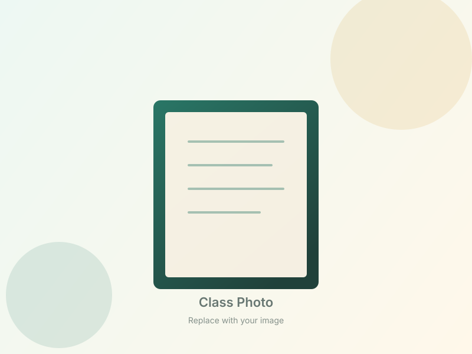
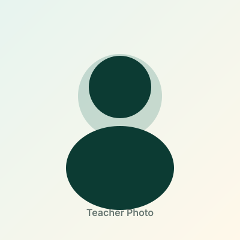
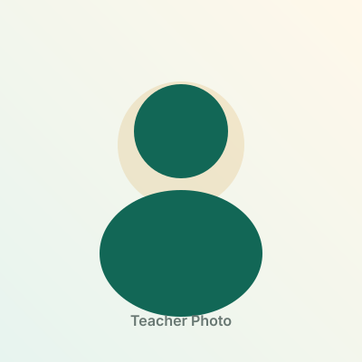
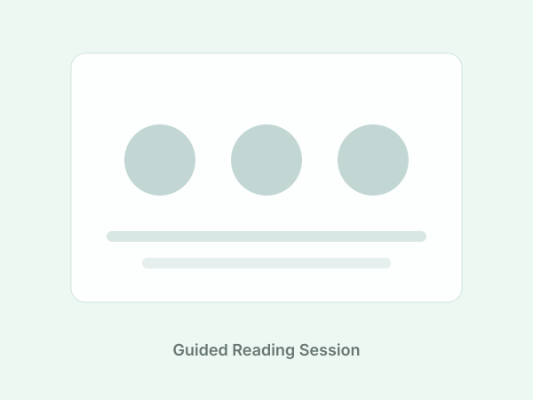
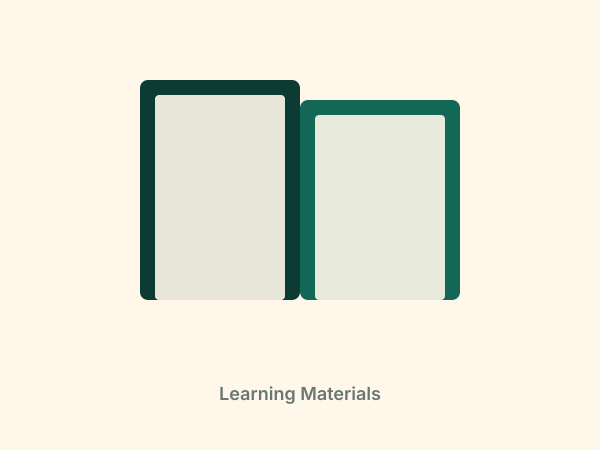
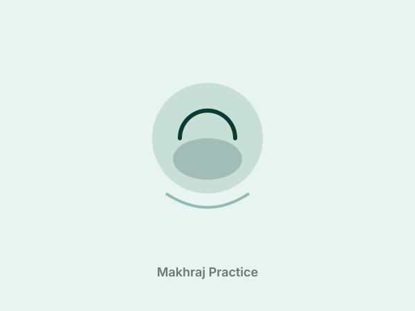
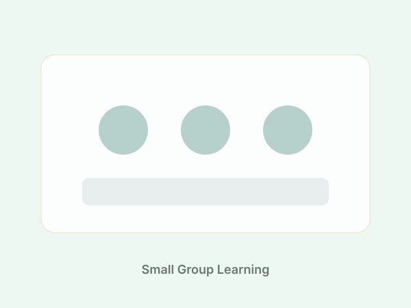

Recognise letters correctly
Students learn Arabic letters, signs and basic reading patterns in a simple guided sequence.
Join our guided Quran reading class using the aT-Tahajji method, designed for beginners, children, adults and anyone who wants to improve makhraj, tajwid and fluency.

The class is structured to help students build reading confidence from the foundation. Every lesson focuses on understanding, practice and correction, not memorisation alone.
Students learn Arabic letters, signs and basic reading patterns in a simple guided sequence.
Focused pronunciation practice helps students read clearly and reduce common reading mistakes.
Students are introduced to essential tajwid rules in a practical and beginner-friendly way.
Continuous practice from short verses to selected surahs helps students read more smoothly.
Flexible options for children, adults, beginners and students who want reading correction.
For students starting from Arabic letters and basic reading.
For students who can read but want to improve accuracy and confidence.
Personalised Quran reading support for focused improvement.
Guided by teachers trained in the aT-Tahajji method, focused on makhraj, tajwid and steady progress.

Quran Reading Instructor · aT-Tahajji Method
Experienced in guiding beginners through makhraj and tajwid foundations. Patient, structured teaching that helps students read with clarity and confidence.

Quran Reading Instructor · aT-Tahajji Method
Specialises in teaching children and adults at every reading level. Focuses on step-by-step progress with gentle correction and encouragement.
Introduction to Arabic letters, signs, pronunciation and basic Quran reading foundation.
Guided reading drills to build confidence in connecting letters and recognising reading patterns.
Pronunciation practice for Arabic letters according to their correct articulation points.
Practice to differentiate similar-sounding letters and reduce common reading errors.
Reading practice using selected surahs such as An-Nas to Ad-Duha with teacher correction.
Structured lessons, guided practice and a supportive learning atmosphere for every student.




Contact us to check class availability, schedule and suitable learning level.